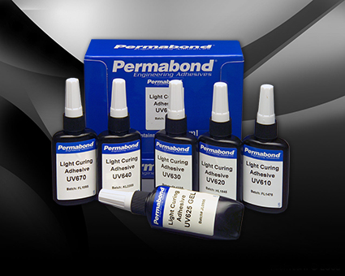

UV膠（紫外光固化劑）
Permabond UV膠（紫外光固化劑）是有韌性，無黃化膠，單組份，無溶劑膠水，可根據需要固化。 紫外光固化膠的應用範圍十分廣泛。 當紫外光活化光引發時，紫外光固化膠開始固化。許多紫外光固化膠黏劑也具備可見光固化性能。對於絕大多數 Permabond 紫外光固化膠而言，一但紫外光被撤開，固化過程則終止。

| 產品 | 簡介 | 顏色 | 固化類型 | 黏度(cp) | 抗拉強度(psi) | TDS |
|---|---|---|---|---|---|---|
| UV605 | 玻璃黏接 | 透明 | UV | 50~100 | 1450~2000 | 下載 |
| UV610 | 高強度，玻璃與金屬黏接 | 半透明 | UV | 800~1000 | 1900~2300 | 下載 |
| UV612T | 高透光，金屬、玻璃、塑料黏接 | 透明 | UV / 加熱 | 400~800 | 1450 | 下載 |
| UV620 | 通用型，光學透明，玻璃黏接 | 無色 | UV | 2200~2900 | 1300~1450 | 下載 |
| UV6231 | 金屬與玻璃，光學透明，抗濕氣 | 透明 | UV | 5000~8000 | 1450 | 下載 |
| UV625 | 大間隙及垂直場合應用，玻璃黏接 | 無色 | UV | 30000~55000 | 870~1450 | 下載 |
| UV670 | 金屬與玻璃黏接，具有韌性 | 無色 | UV | 2000~3000 | 870~1450 | 下載 |
| UV6160 | 高抗拉強度，快速固化 | 透明 | UV | 1000~2000 | 1600 | 下載 |
| UV630 | 低年度，高強度，塑料黏接 | 無色 | UV-可見光 | 200~300 | 基材破壞 | 下載 |
| UV632 | 低年度，PET 塑料黏接 | 無色 | UV-可見光 | 200~400 | 基材破壞 | 下載 |
| UV640 | 中等黏度，塑料黏接 | 無色 | UV-可見光 | 3000~5000 | 基材破壞 | 下載 |
| UV645 | 高黏度，塑料黏接 | 無色 | UV-可見光 | 8000~10000 | 基材破壞 | 下載 |
| UV648 | 高黏度，塑料黏接 | 透明 | UV-可見光 | 20000~40000 | 基材破壞 | 下載 |
| UV649 | 觸變性，塑料黏接 | 無色 | UV | 20000~30000 | 基材破壞 | 下載 |
| UV649-4 | 觸變性，加速固化，塑料黏接 | 固化後透明 | UV | 12000~25000 | 基材破壞 | 下載 |
| UV7141 | 陶瓷塗層玻璃，玻璃與金屬黏接 | 無色 | UV厭氧固化 | 1000~7000 | 2000~2500 | 下載 |
| UV7144 | 金屬與玻璃黏接 | 綠色 | UV厭氧固化 | 500~700 | 4400 | 下載 |
| UV7145 | 金屬與玻璃黏接，耐高溫 | 綠色 | UV厭氧固化 | 2000~3000 | 2500~3500 | 下載 |
| UV7146 | 金屬與玻璃黏接 | 無色 | UV厭氧固化 | 15000~25000 | 2200~2500 | 下載 |
| UV7138 | 金屬與玻璃黏接，高抗拉強度 | 無色 | UV厭氧固化 | 700~1000 | >2200 | 下載 |
| UV7182 | 黏接，封裝，密封 | 綠色 | UV濕氣固化 | 1200~4000 | >290 | 下載 |
| UV681 | 包裝，表面不黏手 | 琥珀色 | UV-可見光 | 80~120 | N/A | 下載 |
| UV683 | 包裝，表面不黏手 | 透明 | UV-可見光 | 1000~1600 | N/A | 下載 |
| UV058270 | 增韌型，低硬度，耐黃變，不黏手 | 透明 | UV-可見光 | 500~600 | 基材破壞 | 下載 |
| UV058190HV | 高硬度高強度，快速固化 | 透明 | UV-可見光 | 4000~7500 | 基材破壞 | 下載 |
| UV05823 | 高黏度高強度，快速固化 | 透明 | UV-可見光 | 25000~35000 | 基材破壞 | 下載 |